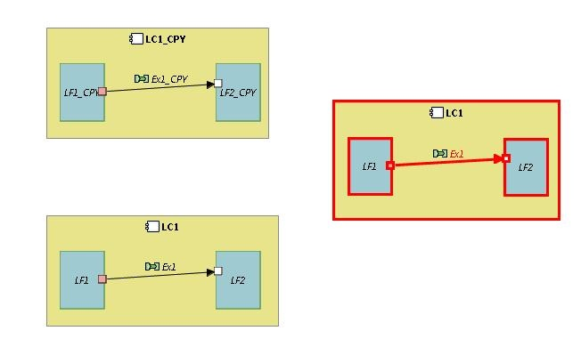

The highlight button
The 'Highlight' button changes the border color and size of the instance elements in the current diagram so that the instance can be easily identified. The color can be changed via a dedicated button. The check boxes on the right-hand side ('Nodes', 'Ports', 'Edges') allow filtering which kinds of graphical elements must be highlighted.
In the figure below, one among three instances of the same pattern has been highlighted in red.
